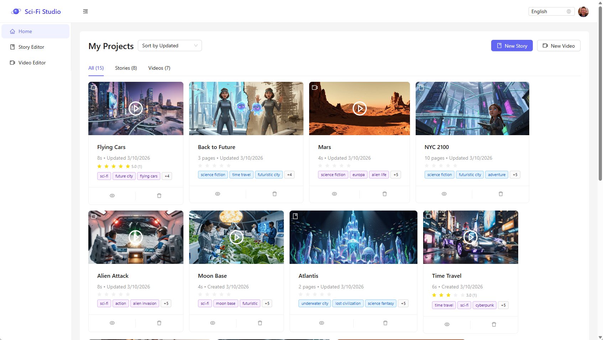
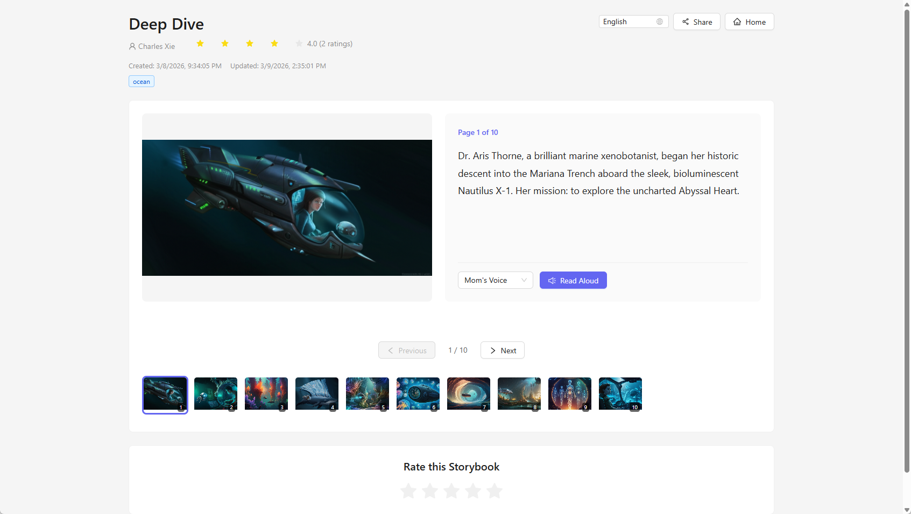
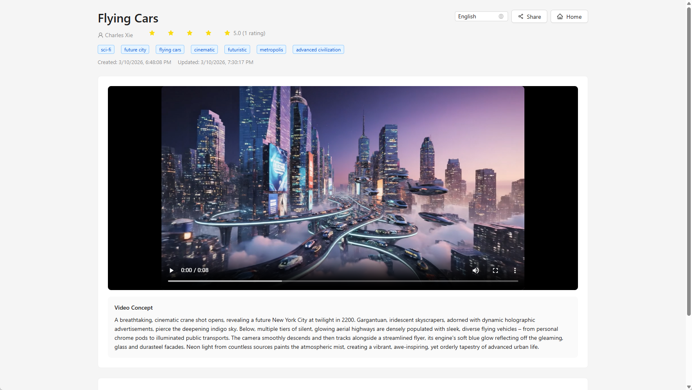

Sci-Fi Studio
A web app where students learn science and engineering by writing their own science fiction — stories and videos exploring space, genetics, quantum physics, robots, transportation, and time travel.
The idea
Sci-Fi Studio engages students in science and engineering by inviting them to create their own science fiction — stories and videos grounded in real ideas about how the world works.

Publish and share
Once created, a storybook or video can be published and shared with others. Over time, a class builds a shared library of imagined futures.

